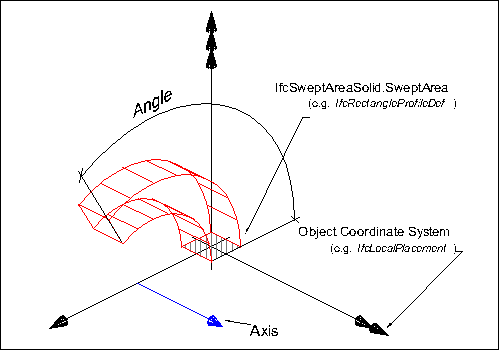
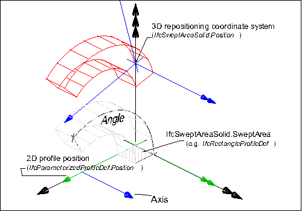
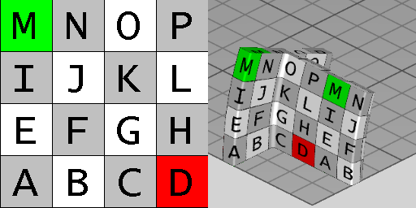

8.8.3.24 IfcRevolvedAreaSolid
| Solide de révolution surfacique |
| Festkörper - durch Rotation |
An IfcRevolvedAreaSolid is a solid created by revolving a cross section provided by a profile definition about an axis.
The resulting solid is positioned by the IfcSweptAreaSolid.Position relative to the object coordinate system. If provided, it allows to reposition the revolved solid. If not provided, it defaults to the current object coordinate system. The axis and the cross section shall be in the same plane, prior to any repositioning.
NOTE Both the axis and the cross section are required to lie in the xy plane of the object position coordinate system.
 |
EXAMPLE Figure 295 illustrates geometric parameters of the revolved solid. The revolved area solid defines the revolution of a 2D area (given by a profile definition) by an axis and angle. The result is a solid. The swept area is given by a
profile definition.
- The profile is defined:
- as a 2D primitive, here IfcRectangleProfileDef, that is placed relative to the xy plane of object coordinate system
- since no 2D profile position coordinate system is provided, here IfcParameterizedProfileDef.Position = NIL, the profile is positioned without transformation into the xy plane of the object coordinate system (by default, centric at 0.,0. with no rotation)
- The resulting swept solid is not repositioned, as no position coordinate system is provided, here IfcSweptAreaSolid.Position = NIL.
The AxisLine can have any orientation within the XY plane, it does not have to be parallel to the y-axis as
shown in the illustration.
|
|
Figure 295 — Revolved area solid geometry
|
 |
EXAMPLE Figure 1 illustrates geometric parameters and additional positioning parameters of the revolved area solid. The revolved area solid defines the rotation of a 2D area by an axis and angle. The 2D area, provided by a parameterized profile definition, can be positioned relative to the object coordinate system (other then by default at 0.,0. with no rotation). The result is a solid that can be repositioned within the object coordinate system.
- The profile to be swept is defined:
- as a 2D primitive, here IfcRectangleProfileDef, that is placed relative to the xy plane of object coordinate system
- a 2D profile position coordinate system is provided that positions the profile relative to the xy plane (here at a corner of the rectangle)
- The resulting swept solid is repositioned, here it is moved into local z and rotated by 15' along the x axis.
|
|
Figure 296 — Repositioned revolved area solid geometry
|
NOTE Definition according to ISO/CD 10303-42:1992
A revolved area solid is a solid formed by revolving a planar bounded surface about an axis. The axis shall be in the
plane of the surface and the axis shall not intersect the interior of the bounded surface. The bounded surface may have
holes which will sweep into holes in the solid. The direction of revolution is clockwise when viewed along the axis in
the positive direction. More precisely if A is the axis location and d is the axis direction and C
is an arc on the surface of revolution generated by an arbitrary point p on the boundary of the swept area, then
C leaves p in direction d x (p - A) as the area is revolved.
NOTE Entity adapted from revolved_area_solid defined in ISO
10303-42.
HISTORY New entity in IFC1.5
Informal Propositions:
- The AxisLine shall lie in the plane of the SweptArea (as defined at supertype
IfcSweptAreaSolid).
- The AxisLine shall not intersect the interior of the SweptArea (as defined at supertype
IfcSweptAreaSolid).
- The Angle shall be between 0° and 360°, or 0 and 2π (depending on the unit type for
IfcPlaneAngleMeasure).
Texture Use Definition
For side faces, textures are aligned facing upright along the sides with origin at the first point of an arbitrary
profile, and following the outer bound of the profile counter-clockwise (as seen from above). For parameterized
profiles, the origin is defined at the +Y extent for rounded profiles (having no sharp edge) and the first sharp edge
counter-clockwise from the +Y extent for all other profiles. Textures are stretched or repeated on each side along the
outer boundary of the profile according to RepeatS. Textures are stretched or repeated on each side along the
outermost (longest) revolution path according to RepeatT, where coordinates are compressed towards the axis of
revolution.
For top and bottom caps, textures are aligned facing front-to-back, with the origin at the minimum X and Y extent.
Textures are stretched or repeated on the top and bottom to the extent of each face according to RepeatS and
RepeatT.
For profiles with voids, textures are aligned facing upright along the inner side with origin at the first point of
an arbitrary profile, and following the inner bound of the profile clockwise (as seen from above). For parameterized
profiles, the origin of inner sides is defined at the +Y extent for rounded profiles (having no sharp edge such as
hollow ellipses or rounded rectangles) and the first sharp edge clockwise from the +Y extent for all other
profiles.
 |
Figure 297 illustrates default texture mapping with a repeated texture (RepeatS=True and RepeatT=True). The image on
the left shows the texture where the S axis points to the right and the T axis points up. The image on the right shows
the texture applied to the geometry where the X axis points back to the right, the Y axis points back to the left, and
the Z axis points up. For an IfcRevolvedAreaSolid having a profile of IfcTShapeProfileDef and
revolved at 22.5 degrees, the side texture coordinate origin is the first corner counter-clockwise from the +Y axis,
which equals
(-0.5*IfcTShapeProfileDef.OverallWidth, +0.5*IfcTShapeProfileDef.OverallDepth),
while the top (end cap)
texture coordinates start at
(-0.5*IfcTShapeProfileDef.OverallWidth, -0.5*IfcTShapeProfileDef.OverallDepth).
|
|
Figure 297 — Revolved area solid textures
|
XSD Specification:
<xs:element name="IfcRevolvedAreaSolid" type="ifc:IfcRevolvedAreaSolid" substitutionGroup="ifc:IfcSweptAreaSolid" nillable="true"/>
<xs:complexType name="IfcRevolvedAreaSolid">
<xs:complexContent>
<xs:extension base="ifc:IfcSweptAreaSolid">
<xs:sequence>
<xs:element name="Axis" type="ifc:IfcAxis1Placement" nillable="true"/>
</xs:sequence>
<xs:attribute name="Angle" type="ifc:IfcPlaneAngleMeasure" use="optional"/>
</xs:extension>
</xs:complexContent>
</xs:complexType>
EXPRESS Specification:
|
ENTITY IfcRevolvedAreaSolid
|
|
|
| AxisLine | : | IfcLine := IfcRepresentationItem() || IfcGeometricRepresentationItem () || IfcCurve() || IfcLine(Axis.Location,
IfcRepresentationItem() || IfcGeometricRepresentationItem () || IfcVector(Axis.Z,1.0)); |
|
|
|
| AxisStartInXY | : | Axis.Location.Coordinates[3] = 0.0; | | AxisDirectionInXY | : | Axis.Z.DirectionRatios[3] = 0.0; |
|
 EXPRESS-G diagram
EXPRESS-G diagram
Attribute Definitions:
| Axis | : |
Axis about which revolution will take place.
|
| Angle | : |
The angle through which the sweep will be made. This angle is measured from the plane of the swept area provided by the XY plane of the position coordinate system.
|
| AxisLine | : |
The line of the axis of revolution.
|
Formal Propositions:
| AxisStartInXY | : |
The start of the axis shall lie in the XY plane of the position coordinate system.
|
| AxisDirectionInXY | : |
The direction of the axis shall be parallel to the XY plane of the position coordinate system.
|
Inheritance Graph:
|
ENTITY IfcRevolvedAreaSolid
|
|
|
| AxisLine | : | IfcLine := IfcRepresentationItem() || IfcGeometricRepresentationItem () || IfcCurve() || IfcLine(Axis.Location,
IfcRepresentationItem() || IfcGeometricRepresentationItem () || IfcVector(Axis.Z,1.0)); |
|
 Link to this page
Link to this page